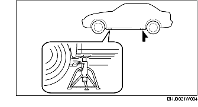

STEUNPUNTEN VOOR GARAGEKRIK/HEFBRUG (2 KOLOMS) EN STEUNPUNTEN VEILIGHEIDSBOK
B3E000000007W01
Steunpunten garagekrik
-
Waarschuwing
-
• Het op verkeerde wijze opkrikken van de auto is erg gevaarlijk. De auto kan van de krik afglijden, hetgeen ernstig letsel kan veroorzaken. Krik de auto uitsluitend op de aangegeven punten op en blokkeer de wielen.
• Plaats de auto nadat deze opgekrikt is, altijd op bokken.
Voor
-
Aanwijzing
-
• Plaats, voordat een krik onder de auto wordt geplaatst, eerst platen (met een dikte van ongeveer 20 mm {0,78 in}) onder de voorwielen, zodat de krik niet in aanraking komt met de bumper.
-
• In het midden van het subframe vóór.
Achter
-
Opmerking
-
• Plaats een plaat (met een dikte van ongeveer 20 mm {0,78 in}) tussen het subframe achter en de krik, om te voorkomen dat het subframe beschadigd raakt.
-
• In het midden van het subframe achter.
Steunpunten hefbrug
Voor en achter
-
Waarschuwing
-
• Het op verkeerde wijze opkrikken van de auto is erg gevaarlijk. De auto kan van de krik af glijden, hetgeen ernstig letsel en een zware beschadiging aan de auto kan veroorzaken. Zorg ervoor dat de auto horizontaal op de hefbrug staat door de steunen aan het eind van de hefarmen uit te draaien.
Plaats van bokken
Voor en achter
-
• Dorpels aan weerszijden van de auto.
